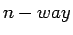
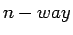
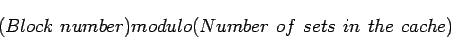
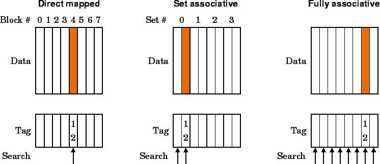
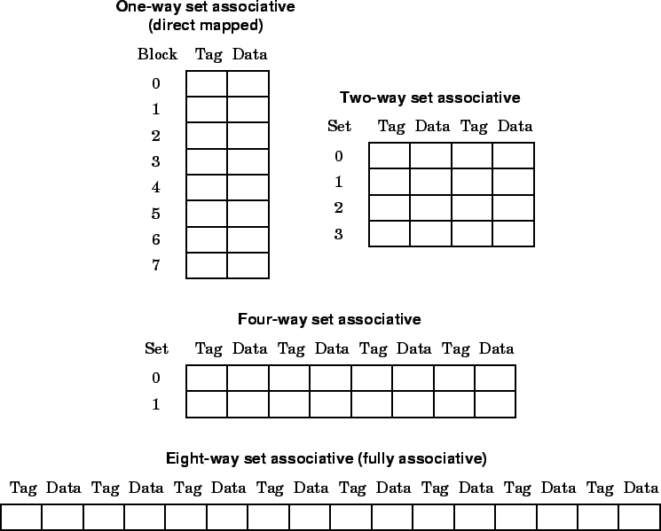

ใน Direct Mapping ใช้การกำหนดตำแหน่ง Block เฉพาะเพียงหนึ่งที่เท่านั้น โดยที่ไม่สามารถลงในตำแหน่งอื่นได้แม้ว่า จะมีพื้นที่ว่าง อีกทางหนึ่งเราให้ Block สามารถเลือกลงตำแหน่งใดก็ได้โดยการขยายขนาด Tag ให้มีขนาดเท่ากับแอดเดรสของ Block วิธีการนี้เรียกว่า Fully Associative โดยเมื่อมีการเรียกใช้แคช ระบบควบคุมจะทำการสืบค้นทุก Block ในแคชว่าตรงหรือไม่ ซึ่งสามารถทได้แบบขนาน และทำการเปรียบเทียบค่า อย่างไรก็ตามตัวสืบค้นและเปรียบเทียบค่าต้องการฮาร์ดแวร์จำนวนมาก และ มีแนวโน้มต่อวงรอบสัญญาณนาฬิกา ซึ่งในทางปฏิบัติสามารถทำได้กับจำนวน Block ไม่มากนัก
อีกวิธีหนึ่งในการเลือกลงช่องเป็นวิธีการที่อยู่ระหว่างการทำงานแบบ Direct Mapping และ Fully Associative วิธีการนี้เรียกว่า Set Associative Mapping ในการจัดเรียงแบบ Set Associative หนึ่ง Block สามารถเลือกช่องลงได้  ช่อง สำหรับแคชแบบ  Set Associative ที่ประกอบด้วย Set จำนวนหนึ่ง และในแต่ละ Set มี
ช่อง สำหรับแคชแบบ  Set Associative ที่ประกอบด้วย Set จำนวนหนึ่ง และในแต่ละ Set มี  Block แต่ละ Set จะมีหมายเลขอ้างอิงในแคช ซึ่งใน Set จะมี Block ที่มีแอดเดรสดังต่อไปนี้
Block แต่ละ Set จะมีหมายเลขอ้างอิงในแคช ซึ่งใน Set จะมี Block ที่มีแอดเดรสดังต่อไปนี้
|  | (7.21) |
การหา Block ในแคช ชุดควบคุมหน่วยความจำจะทำการสืบค้นทุก Block ใน Set แสดงในรูปที่ 7.10 ที่ Block 12 สามารถมีช่องลงได้ สองช่องใน 2-way Set Associative Cache
|

|
รูป 7.11 แสดง แคชขนาด 8 Block ที่ทำการใช้งานเป็นแบบ Direct Mapping, 2-way Set Associative Mapping, 4-way Set Associative Mapping, และ Fully Associative Mapping
|

|
รูป 7.12 แสดงฮาร์ดแวร์ของแคชแบบ 4-way Set Associative
การเลือก Block ในการแทนที่สามารถใช้วิธีการ Least Recently Used (LRU)
เราสามารถลด Miss Penalty ได้โดยใช้ Multilevel Cache